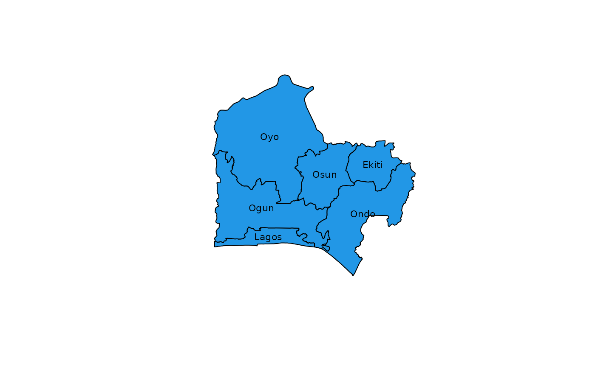
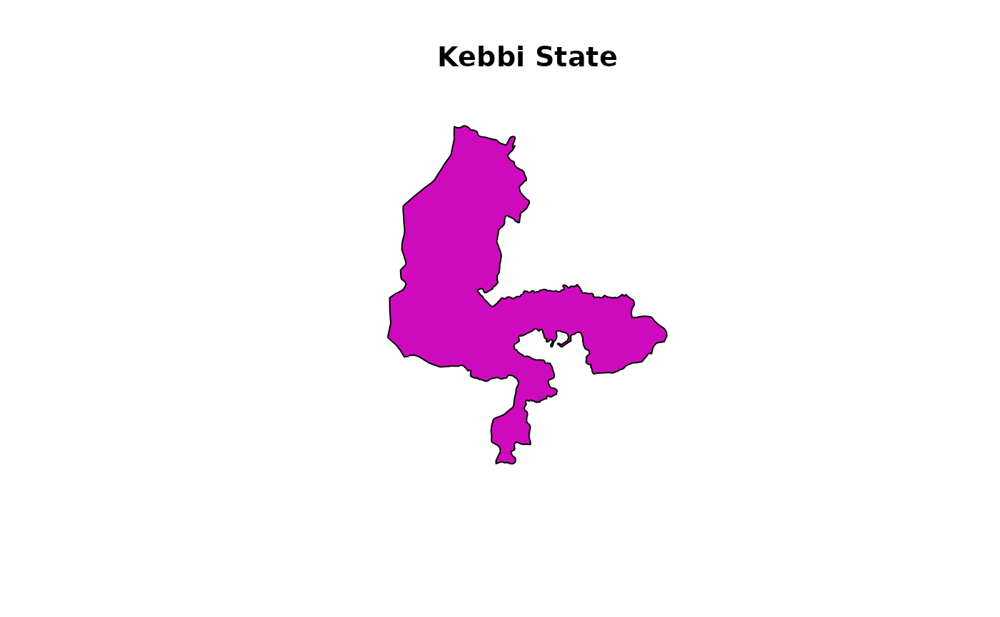
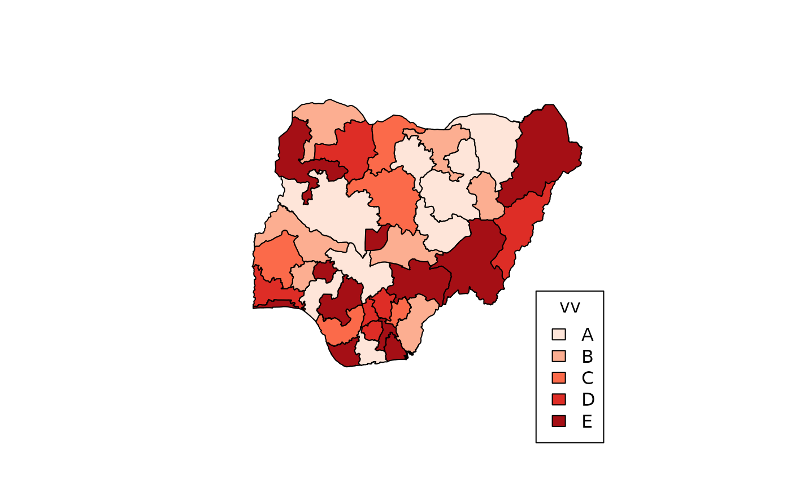
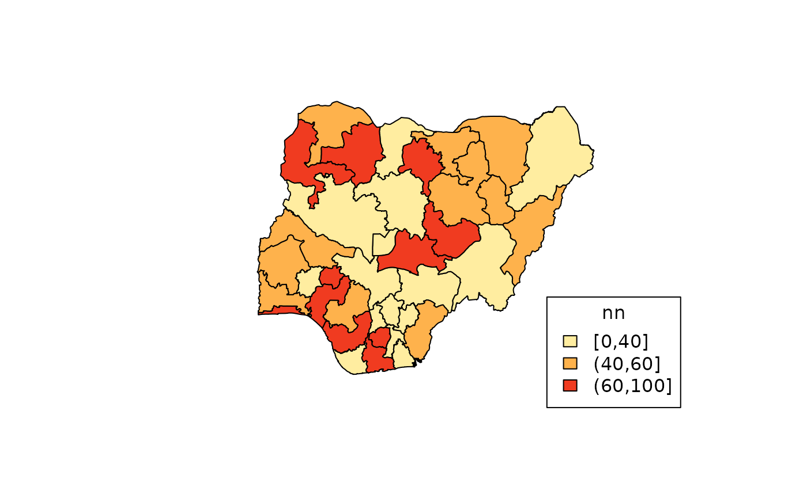
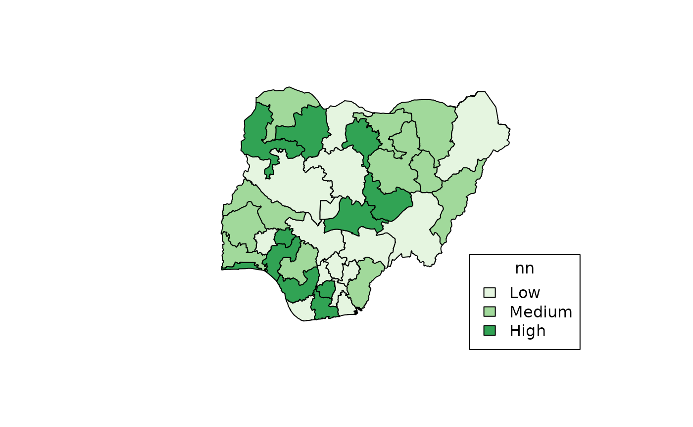

The need for relatively easy-to-use tools in the R statistical environment for mapping data on Nigeria was a motivation for the development of this package. Not so much of low-level programming needs to be done by the user; rather a collection of pre-existing packages and idioms are brought together to enable a focus on actual data visualization.
The main function for drawing Nigeria maps is map_ng. It
uses data from the CIA World Database provided by the
{mapdata} package as well as ESRI shapefiles from the World
Bank to draw simple maps of Nigeria.
To show the map without the state borders, set the first argument
(region) to NULL. Thus, with all other
arguments set to default values, that would be
map_ng("Nigeria")All the Local Government Areas can equally be displayed, using a map
that, by default, does not display text, so as to avoid cluttering. This
kind of map is useful for charting choropleth maps, as shown below for
the States. To this, we pass the value produced by
lgas().
It is also possible to make maps of sub-national divisions by
defining them via region. For example,
states("sw") returns a character vector of the states in
the South-West geopolitical zone (see ?states). To display
them on a map with a few embellishments like labelling and colour,
write

A single state can also be drawn:

Choropleth maps
Choropleth maps that display differences among regions can also be
created with map_ng. There are a number of ways this can be
done, depending on the kind of arguments supplied to the function:
- A data frame containing a column for the regions and at least one other for the data to be displayed, or
- An atomic vector for the regions and another for the data to be displayed.
This map is built on categorical data (i.e. factors);
atomic vectors that are coercible to this class are also accepted. In
the case of numeric data, notably those of type double,
they can be coaxed into categories only if class boundaries are provided
via the breaks argument.
To demonstrate this, we will create a data frame with some meaningless data:
# Create variables
ss <- states()
numStates <- length(ss)
vv <- sample(LETTERS[1:5], numStates, TRUE)
# Create a data frame and view top rows
dd <- data.frame(state = ss, letter = vv)
head(dd)
#> state letter
#> 1 Abia E
#> 2 Adamawa D
#> 3 Akwa Ibom E
#> 4 Anambra D
#> 5 Bauchi A
#> 6 Bayelsa EUsing a data frame
The easiest way to draw the choropleth map is to pass a two-column
data frame to the data argument. Thus if the data frame has
more columns, it is trivial to subset it and extract the 2 columns of
interest. Continuing with our example,
map_ng(data = dd)
Note the following:
- The argument
varis the name of the column of our data frame that has the variable to be mapped. It is found via the mechanism called quasiquotation; to explore this further see?rlang::quasiquotation. - The colours darken sequentially from A through E and it follows the
natural (alphabetical) ordering of the factor levels (i.e. category
labels). To control this order upfront, create an ordered
factor using any the various ways available in R. (See
?ordered) - Our variable
varis actually a character vector, but internally is converted to a factor.
Using atomic vectors
We can use the same data to make the same map, but with a different coding approach:

It’s exactly same map as before, but this time, we used 2 vectors to
provide the data – one for the regions (in this case the 36 States and
FCT) and another for the categorization. We have also introduced some
colouring with the col argument. Although it has the same
data, if we try to use the column name from dd, we have an
error.
Numerical values
When the data to be categorized are numeric vectors, the
categories have to be defined. To achieve this, the breaks
argument has to be supplied. This is a numeric vector that describes
class limits for grouping the values. The number of classes is
length(breaks) - 1.
nn <- runif(numStates, max = 100) # random real numbers ranging from 0 - 100
bb <- c(0, 40, 60, 100)
map_ng(
region = states(),
x = nn,
breaks = bb,
col = 'YlOrRd',
show.text = FALSE
)
To get a more meaningful and interpretable legend, use the
categories argument.
map_ng(
region = states(),
x = nn,
breaks = bb,
categories = c("Low", "Medium", "High"),
col = 3L,
show.text = FALSE
)
Note that various colour arguments have been used, some of them kind
of cryptic. More details on how to use the colouring schemes, check the
help page of ?map_ng.
Mapping of point data
To show the distribution of point data on any the maps such as GIS
location data, a different set of arguments is employed. Since point
data requires a pair of coordinates to be accurate, both the
x and y arguments MUST be provided. Once the
function receives both coordinates, either as separate atomic vectors or
as columns from a data frame, map_ng defaults to the
mapping of points only in within the boundaries indicated by
region. It looks like this:
x <- c(3.000, 4.000, 6.000, 5.993, 5.444, 6.345, 5.744)
y <- c(8.000, 9.000, 9.300, 10.432, 8.472, 6.889, 9.654)
map_ng("Nigeria", x = x, y = y)The function map_ng carries out a bounds check on point
data and returns an error, and the points are not plotted, when the
coordinates are beyond the region. For instance, using the same points
provided earlier, if we try to plot them on a map of Kwara State,
map_ng("Kwara", x = x, y = y)#> Error in `map_ng()`:
#> ! Coordinates are beyond the bounds of the plotted area